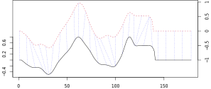

This article is a practical guide for time-series clustering using the dtwclust package. The dtwclust package in R (see vignette) provides a powerful and flexible framework for time-series clustering, allowing you to implement and compare various algorithms, particularly those leveraging Dynamic Time Warping (DTW). This showcase will guide you through a practical example of time-series clustering using dtwclust, including data preparation, clustering execution, visualization, and evaluation.
1 What is Dynamic Time Warping (DTW)
Dynamic Time Warping (DTW) is a prominent distance measure used in shape-based time-series clustering. Unlike Euclidean distance, which compares points at the same time index, DTW allows for “warping” or stretching/compressing the time axis of one series to find an optimal alignment with another. This enables it to accurately measure similarity between time-series that may vary in speed, length, or have phase shifts, but exhibit similar overall shapes.

Sample alignment performed by the DTW algorithm between two series. The dashed blue lines exemplify how some points are mapped to each other, which shows how they can be warped in time. Note that the vertical position of each series was artificially altered for visualization. Credits: Alexis Sardá-Espinosa
2 Data Preparation
We will use daily closing prices of various cryptocurrencies from the dYdX exchange. The data will be fetched using the httr2 package.
Note
dYdX Exchange is a decentralized finance (DeFi) platform that allows users to trade perpetual derivatives, margin, and spot crypto assets without a centralized intermediary.
Let’s start by fetching the list of available perpetual markets from the dYdX API. We will then filter for popular cryptocurrencies and retrieve their daily closing prices.
tickers <-lapply(body$markets[1:31], function(market) { market$ticker})# remove MATIC-USD due to missing datatickers <- tickers[!tickers %in%c("MATIC-USD")]tickers <- tickers |>unlist() |>array()
Below are are helper functions to convert date-times to the required format and to fetch daily candle data from the dYdX API. For some reason at the time of writing this, the API ignores the fromIso parameter, so we will filter the data after fetching it.
Next, we will reshape the data into a wide format suitable for clustering, where each row represents a cryptocurrency and each column represents a daily closing price.
We will perform hierarchical clustering using the DTW distance and the “ward.D2” agglomeration method. Hierarchical clustering builds a hierarchy of groups without requiring a pre-specified number of clusters initially, and the process is deterministic.
k = 4 specifies the desired number of clusters.
type = "hierarchical" sets the clustering algorithm type.
distance = "dtw" uses Dynamic Time Warping distance.
seed = 42 for reproducibility of random initializations (if applicable).
control = hierarchical_control(method = "ward.D2") specifies the linkage method.
hierarchical clustering with 4 clusters
Using dtw distance
Using PAM (Hierarchical) centroids
Using method ward.D2
Time required for analysis:
user system elapsed
2.958 0.047 3.005
Cluster sizes with average intra-cluster distance:
size av_dist
1 4 87.52806
2 2 80.73321
3 12 66.03449
4 12 51.73463
The output provides details about the clustering, including the distance measure, centroid method, linkage method, and cluster sizes with their average intra-cluster distances.
4 Accessing Clustering Results
The tsclust() function returns an S4 object of class TSClusters. You can access its slots, such as the cluster assignments, using the @ operator.
# View cluster assignments for each time serieshc_4_ward@cluster
BTC ETH LINK CRV SOL ADA AVAX FIL LTC DOGE ATOM DOT UNI BCH TRX NEAR
1 2 3 2 3 3 3 4 3 3 4 4 3 1 1 4
MKR XLM ETC COMP WLD APE APT ARB BLUR LDO OP PEPE SEI SHIB
1 3 3 4 4 4 4 3 4 3 4 4 3 4
5 Visualizing Clustering Results
The plot() method for TSClusters objects offers various visualization types.
5.1 Dendrogram
A dendrogram visually represents the hierarchy of clusters.
Figure 1: Dendrogram of hierarchical clustering using DTW distance and Ward.D2 linkage.
5.2 Series and Centroids
Visualize the time series grouped by cluster, along with their representative prototypes (centroids). By default, prototypes for hierarchical clustering with PAM centroids are actual series from the data.
plot(hc_4_ward, type ="sc") # sc = series + centroids
Figure 2: Time series clustered with their centroids using DTW distance and Ward.D2 linkage.
You can also plot a specific centroid, and even customize its appearance.
6 Comparing Multiple Clustering Solutions and Evaluation
In practice, choosing the optimal number of clusters (k) and other parameters is crucial. dtwclust allows you to test multiple configurations simultaneously and evaluate them using Cluster Validity Indices (CVIs).
Note
Cluster Validity Indices are quantitative metrics used to assess the quality and “purity” of clustering results. Since clustering is often an unsupervised process, CVIs provide an objective way to evaluate performance, especially when comparing different clustering algorithms or configurations.
To accelerate the process, especially when testing many combinations, parallelization is highly recommended. dtwclust integrates with the foreach and doParallel packages for this purpose.
library(bigmemory)library(doParallel)# Define a range of k values and agglomeration methods to testk_values <-3:6linkage_methods <-c("ward.D2", "average", "single", "complete")# Initialize a parallel backend# Use detectCores() - 1 to leave one core freenum_cores <-detectCores() -1if (num_cores <1) num_cores <-1# Ensure at least one core is usedcl <-makeCluster(num_cores)registerDoParallel(cl)# Perform multiple hierarchical clusterings in parallelhc_par <-tsclust(cryptos_list_wide,k = k_values,type ="hierarchical",distance ="dtw",seed =42,control =hierarchical_control(method = linkage_methods),args =tsclust_args(dist =list(window.size =7)),trace =TRUE)
Calculating distance matrix...
Performing hierarchical clustering...
Extracting centroids...
Elapsed time is 13.749 seconds.
# Stop the parallel cluster and revert to sequential computationstopCluster(cl)registerDoSEQ()
cvi_results <-lapply(hc_par, cvi, type =c("Sil", "D", "CH")) %>%do.call(rbind, .)# Find the configuration that maximizes each CVIoptimal_indices <-apply(cvi_results, MARGIN =2, FUN = which.max)
6.1.1 Display CVI results and optimal configurations
hierarchical clustering with 3 clusters
Using dtw distance
Using PAM (Hierarchical) centroids
Using method average
Time required for analysis:
user system elapsed
1.364 0.122 13.749
Cluster sizes with average intra-cluster distance:
size av_dist
1 4 80.06529
2 25 84.14893
3 1 0.00000
6.1.3 Retrieve the best clustering based on Dunn index
Similarly, we can extract the clustering that achieved the highest Dunn score.
hierarchical clustering with 5 clusters
Using dtw distance
Using PAM (Hierarchical) centroids
Using method single
Time required for analysis:
user system elapsed
1.364 0.122 13.749
Cluster sizes with average intra-cluster distance:
size av_dist
1 3 62.58062
2 1 0.00000
3 24 78.78400
4 1 0.00000
5 1 0.00000
6.1.4 Retrieve the best clustering based on Calinski-Harabasz index
Finally, we can extract the clustering that achieved the highest Calinski-Harabasz score.
hierarchical clustering with 3 clusters
Using dtw distance
Using PAM (Hierarchical) centroids
Using method ward.D2
Time required for analysis:
user system elapsed
1.364 0.122 13.749
Cluster sizes with average intra-cluster distance:
size av_dist
1 6 106.59632
2 12 66.03449
3 12 51.73463
This output helps you objectively compare different clustering outcomes and select the most suitable solution for your data based on various validity metrics.
7 Performing Clustering with Optimal Configuration
Let’s take a look at the clustering configuration that achieved the maximum results according to the Calinski-Harabasz index.
hierarchical clustering with 3 clusters
Using dtw distance
Using PAM (Hierarchical) centroids
Using method ward.D2
Time required for analysis:
user system elapsed
2.910 0.106 3.017
Cluster sizes with average intra-cluster distance:
size av_dist
1 6 106.59632
2 12 66.03449
3 12 51.73463
# View cluster assignments for each time serieshc_3_ward@cluster
BTC ETH LINK CRV SOL ADA AVAX FIL LTC DOGE ATOM DOT UNI BCH TRX NEAR
1 1 2 1 2 2 2 3 2 2 3 3 2 1 1 3
MKR XLM ETC COMP WLD APE APT ARB BLUR LDO OP PEPE SEI SHIB
1 2 2 3 3 3 3 2 3 2 3 3 2 3
Plot the dendrogram for this clustering.
# Plot the dendrogrampar(mar =c(0, 4, 2, 2))plot(hc_3_ward,xlab ="", ylab ="", sub ="",main ="Hierarchical Clustering Dendrogram (DTW, Ward.D2)")
The line plots of the time series grouped by cluster show very distinct patterns.
# Plot time series and their centroidsplot(hc_3_ward, type ="sc")
Figure 4: Time series clustered using DTW distance and Ward.D2 linkage.
8 Conclusion
dtwclust provides a modular and efficient framework for time-series clustering in R, implementing various algorithms (especially DTW-related ones) and allowing for customization and comparison. It serves as a strong starting point for time-series clustering tasks.